01.
Apartamente
Studio-uri, 2-3 camere și penthouse-uri. Optimizăm fiecare metru pătrat fără să sacrificăm caracterul.
EDIȚIA 2026 · STUDIO
studio · designer de interior
Studio de design interior - concept, randări 3D fotorealistice, proiect tehnic 2D și coordonare pe șantier. Lucrăm proiecte rezidențiale și comerciale, de la prima discuție până la ultimul finisaj. Spațiul trebuie să servească oamenii care îl locuiesc, nu invers.
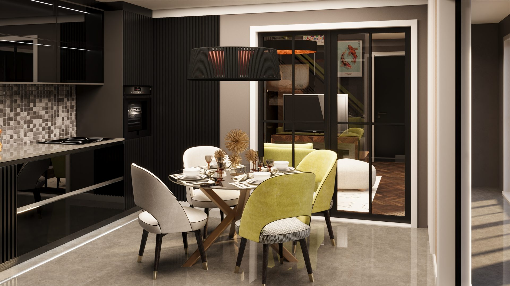
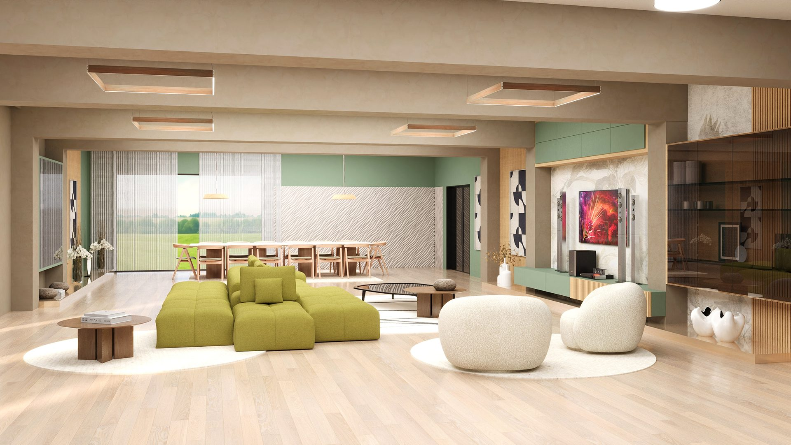
PG. 01 / COPERTĂ — randări recente
10+
ani experiență
Timișoara
studio · Titulescu 19
5,0/5
recenzii Google
3
pachete · Basic / Std / Premium

studio · filozofie
Suntem un studio de design interior din Timișoara, format în jurul unei idei simple: înainte să decidem cum arată un spațiu, înțelegem cum se trăiește în el. Lumina, traseele zilnice, mobila pe care o păstrezi din vechi, rutina familiei sau a echipei. Apoi venim cu propunerea estetică.
Lucrăm pe pachete clare - de la concept și randări fotorealistice până la coordonarea cu furnizorii și vizite pe șantier - astfel încât să știi exact ce primești și când.
Onestitate
Spunem ce funcționează și ce nu, înainte să facturăm orice.
Detaliu
Plansele tehnice 2D ajung până la nivel de aparataj electric.
Continuitate
Aceeași echipă de la concept până la predarea finală.
Cuprins
Cinci capitole pe care merită să le parcurgi înainte de a programa o discuție.
specializări
Lucrăm pe patru direcții în care simțim că ducem cel mai mult valoare clientului - cu metoda completă, de la concept până la coordonarea pe șantier.
01.
Studio-uri, 2-3 camere și penthouse-uri. Optimizăm fiecare metru pătrat fără să sacrificăm caracterul.
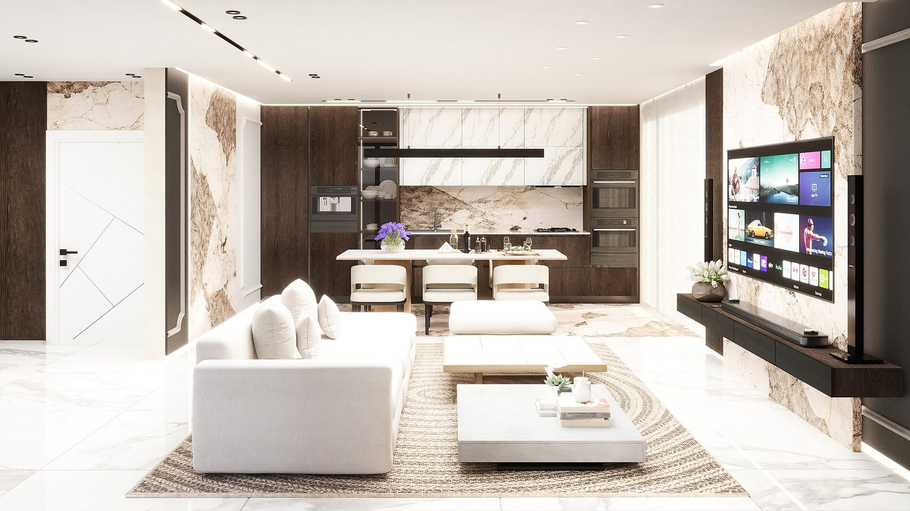
02.
Proiecte rezidențiale ample, cu zone deschise, mobilier pe comandă și soluții personalizate per cameră.
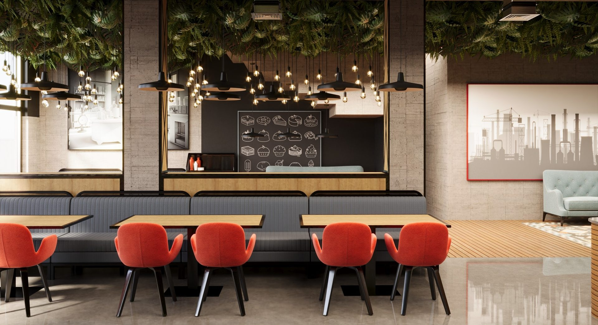
03.
Cafenele, restaurante și retail. Fluxul clientului, lumina și brandingul - calibrate împreună.
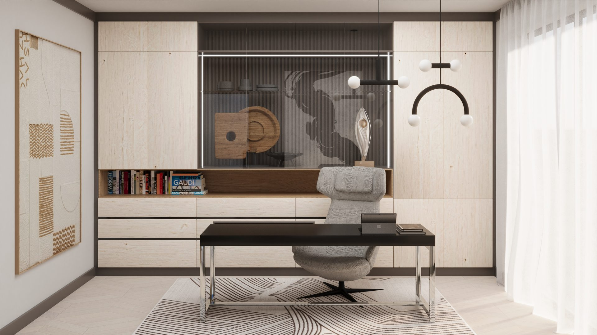
04.
Spații pentru concentrare, întâlniri și reprezentare - fără să transforme casa într-un birou rece.
capitolul i
Trei niveluri de implicare, de la concept și randări până la coordonarea pe șantier. Alege pachetul potrivit proiectului tău.
01.
esențialConcept, randări fotorealistice și plansele tehnice esențiale pentru execuție.
Consultanță & consiliere
Randări & proiect tehnic
02.
popularTot din Basic, plus sprijin în alegerea furnizorilor și link-uri de achiziție online.
Include tot din Basic
Sprijin furnizori
Link-uri achiziție online
03.
la cheieImplicare totală: tot din Standard, plus calcul materiale, vizite pe șantier și consiliere în magazine.
Include tot din Standard
Calcul materiale & suprafețe
Vizite pe șantier
Consiliere în magazine
Prețurile finale se stabilesc după discuția inițială, în funcție de suprafața proiectului și nivelul de detaliu cerut. Plată eșalonată pe milestones.
capitolul ii
Patru etape, fiecare cu deliverables clare. Fără surprize, fără facturi în plus pe parcurs.
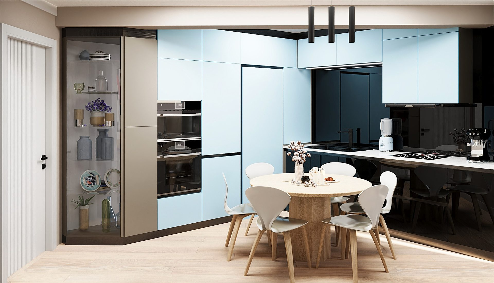
01.
Măsurăm, fotografiem și înțelegem rutina celor care vor folosi spațiul - lumina naturală, traseele zilnice, mobila păstrată din vechi. Fără această lectură, conceptul rămâne doar decorativ.
Livrabil: brief și plan de măsurători
02.
Schițe, palete, mood-boards și 2-4 randări 3D fotorealistice pentru fiecare spațiu. Iterăm varianta până când clientul confirmă că e direcția bună - apoi îngheață conceptul.
Livrabil: randări 3D + paleta finală
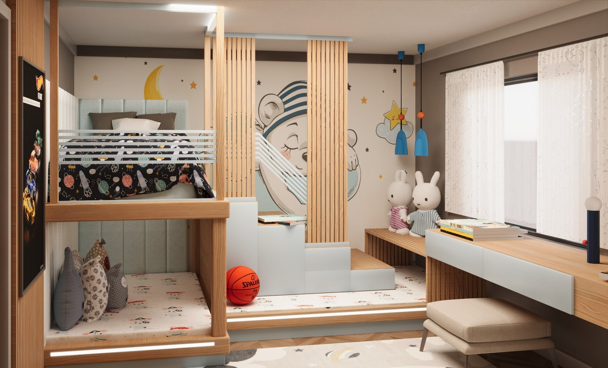

03.
Plansele detaliate pentru mobilier la comandă, finisaje pereți și tavan, amplasament aparataj electric. Tot ce are nevoie echipa de execuție ca să lucreze fără întrebări.
Livrabil: dosar 2D complet pentru execuție
04.
Vizite pe șantier, recomandări de furnizori, link-uri de achiziție online și, în pachetul Premium, deplasare alături de beneficiar în magazine. La final - predări și styling.
Livrabil: spațiul gata de mutat
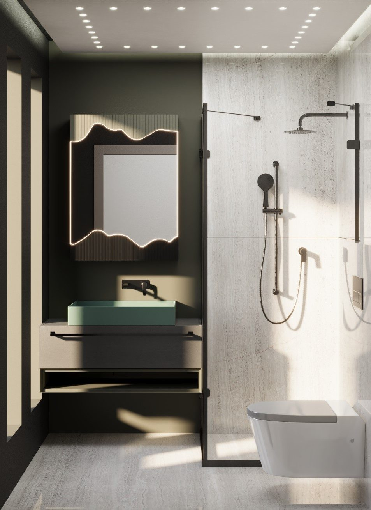
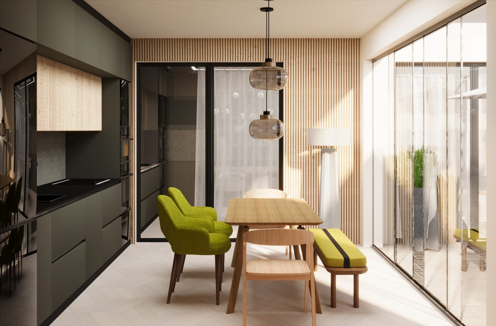
— proiect featured
Cabinete olive în finisaj mat, panouri verticale din stejar și pendant-uri de sticlă suflată peste masa de lemn masiv. Lumina naturală abundentă, fluidizare spre terasă, zonă de mic-dejun pentru patru persoane.
capitolul iii
Selecție din randările recente - bucătării, living-uri, dormitoare, birouri, băi și spații comerciale. Glisează pentru a explora toate proiectele.
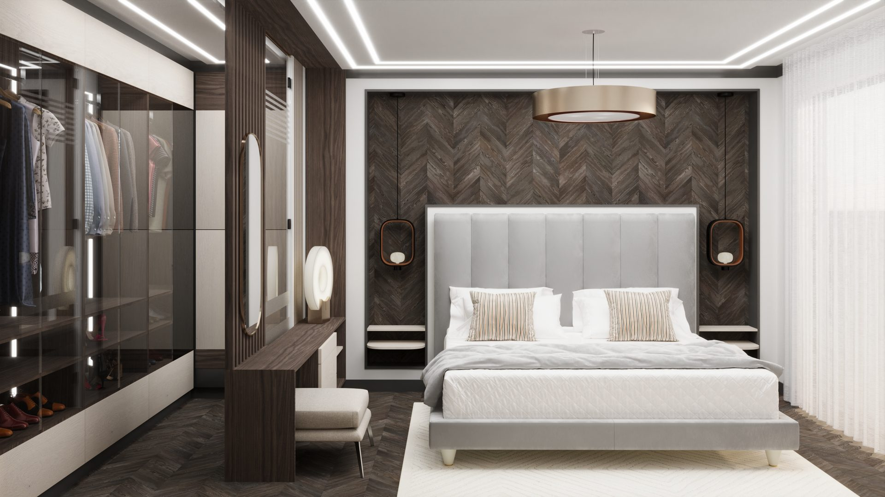
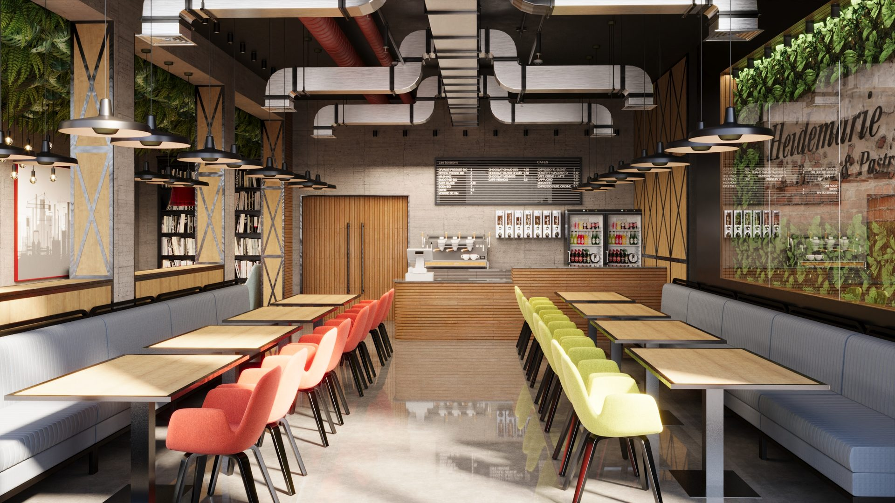

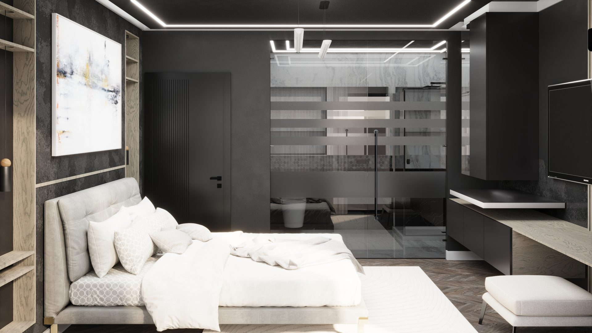
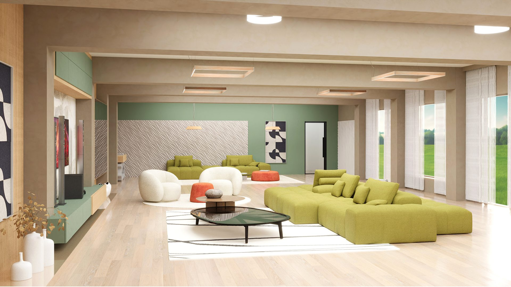

01 · 16 proiecte
01 · 16 proiecte · glisează pentru mai multe
Programează vizita la studiovoci · testimoniale
Creativitate!
Au venit cu trei direcții pe care nu mi le imaginam. Am ales una și e mult mai bună decât briefingul meu inițial.
Oameni de cuvânt.
Termenele anunțate la început au fost respectate la zi. Nu trebuie să tragi de ei să livreze - vin singuri cu update-uri.
Profesioniști.
Plansele 2D au fost atât de clare încât echipa de șantier nu a avut nici o întrebare de clarificare. Rar întâlnit la noi.
întrebări frecvente
Pentru un apartament tipic, conceptul + randările durează 3-5 săptămâni, iar proiectul tehnic 2D mai ia 2-3 săptămâni. Pentru case sau spații comerciale, planificăm minim 8-10 săptămâni înainte de începerea șantierului.
Da. La etapa de vizită inventariem ce vrei să păstrezi - canapele, biblioteci, piese cu valoare emoțională - și conceptul se construiește în jurul lor. E mai ieftin pentru tine și sustenabil ca abordare.
Studio-ul este în Timișoara și aici concentrăm activitatea - de la prima vizită până la ultima vizită pe șantier. Pentru proiecte din afara orașului discutăm de la caz la caz, dar pacientul nostru principal este Timișoara și împrejurimile imediate.
Modificările sunt incluse în toate cele trei pachete - iterăm până când randarea reflectă exact ce vrei. La un moment dat înghețăm conceptul de comun acord, ca să putem trece la proiectul tehnic.
Plata se eșalonează pe etape: avans la semnarea contractului, tranșă după aprobarea conceptului și restul la livrarea proiectului tehnic. Pentru pachetul Premium, vizitele și consilierea în magazine se contractează separat după caz.
Amândouă variantele funcționează. Putem lucra cu echipa ta - plansele tehnice 2D sunt suficient de detaliate să fie executate de orice firmă serioasă. Sau venim cu recomandări de antreprenori și furnizori cu care am mai colaborat.
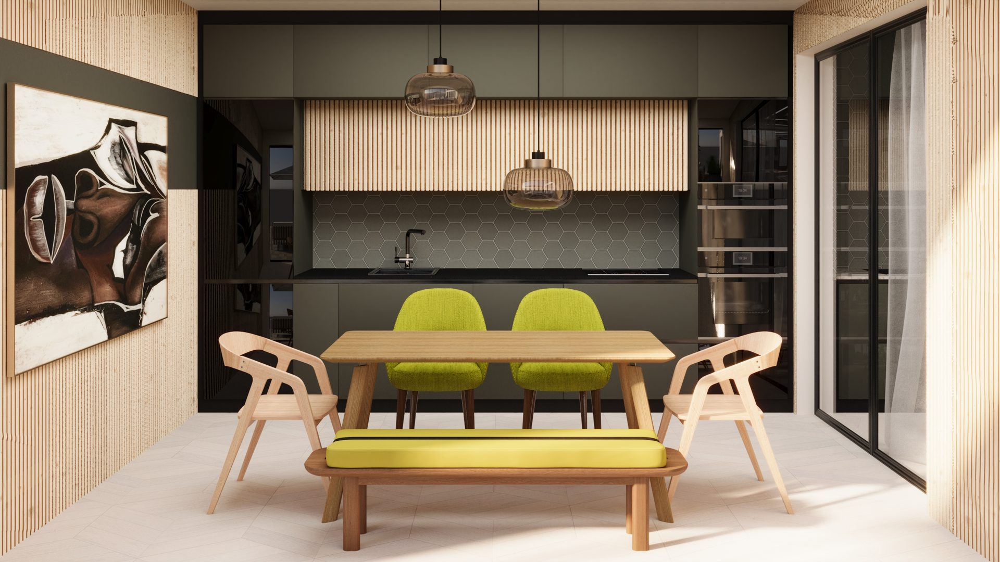
— pasul următor
15 minute la telefon ne sunt suficiente ca să înțelegem proiectul și să-ți spunem care pachet ți se potrivește. Fără obligații, fără facturi pentru discuția inițială.
capitolul iv
Răspundem la telefon în timpul programului și pe WhatsApp în 12 ore. Pentru o discuție mai detaliată programăm o întâlnire la studio.
Telefon
0726 726 085Studio
Strada Nicolae Titulescu 19
300167 Timișoara, județul Timiș
Discuție
La programare
Telefonic, WhatsApp sau la studio